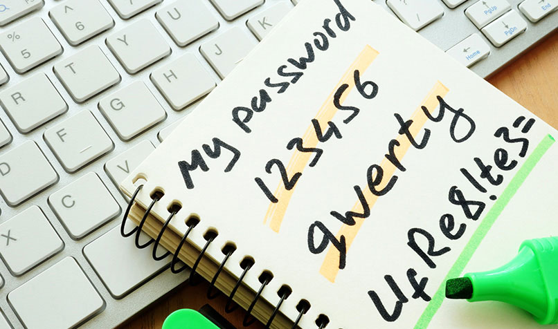

Zone 1 - Basic & Easy Privacy
Authored By: Ashley Palaguachi
If you are looking to keep yourself secure and organized, this zone/method is for you! The other zones may even require you to delete yourself from online services and you may not be ready for that yet. In this zone, you will find basic ways to keep your information safe from the rest of the internet.
PasswordsYou can use any web browser you desire, but be sure that the add-ons and extensions are trusted. You can switch your search engine to either "DuckDuckGo" or "Startpage" which are very trustworthy. You should also never store cookies, your history, or cache, but if you do, clear them yourself frequently.
VPNSHide your identity on the websites you visit, your internet service provider, or anyone trying to track you. VPN’s are encrypted therefore nobody can see what you’re doing. Stay away from free VPNs, and avoid proxies. They are so important to keep yourself protected and you need to have one.
Social MediaHide your real information (names, phone numbers, addresses, etc) and do not talk to strangers,only your close friends. Do not post in public comments and disable permissions.. These services do not need to access your location and apps like Snapchat does not need to access your SMS. Do not post any pictures of yourself because you will be easy to target in person.